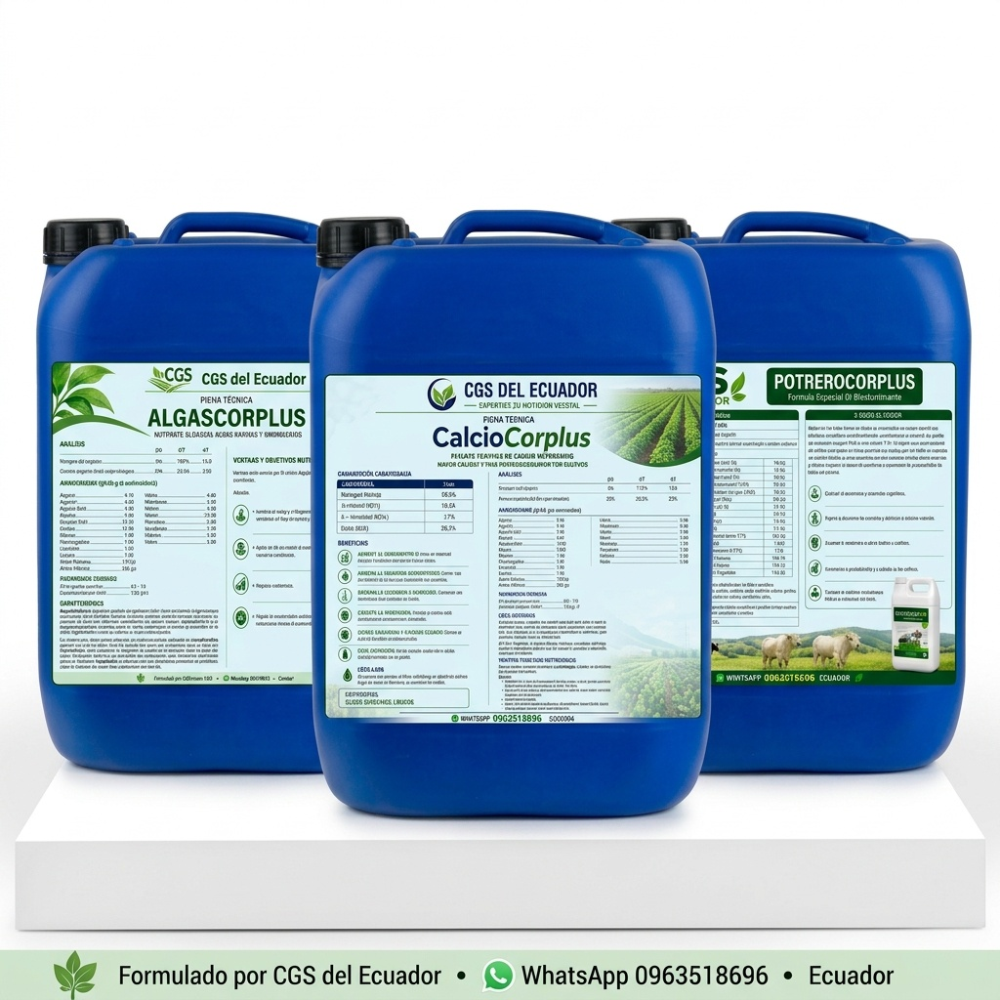
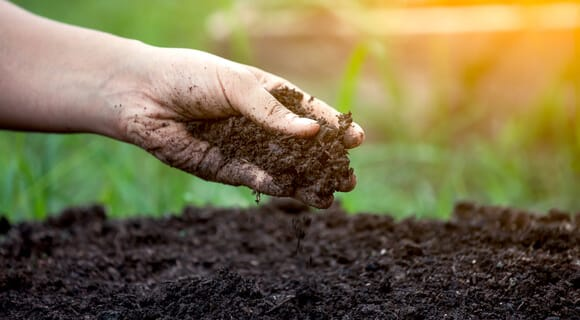
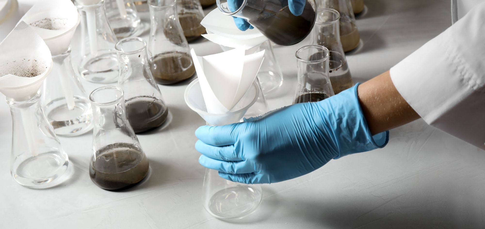
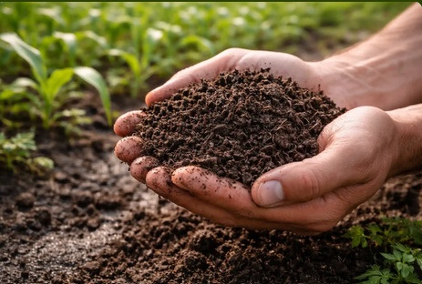

CGS Del Ecuador: más raíces, mayor floración y buen cuaje para tus cultivos, con asesoría de Ingenieros Zamoranos y envíos a domicilio a todas las provincias.
Abono orgánico bioestimulante desarrollado para optimizar la absorción de nutrientes y la respuesta al estrés ambiental.
Evaluación de requerimientos de suelo y cultivo para recomendar dosis y planes nutricionales exactos.
Respuesta inmediata por WhatsApp y envíos coordinados a cualquier provincia del Ecuador.
Conoce algunas de nuestras líneas principales de nutrición y asesoría

Formulaciones orientadas al desarrollo de raíces fuertes, mayor floración y cuajado.

Mejora la estructura del terreno y la disponibilidad biológica de los fertilizantes.

Diagnóstico químico y físico completo para determinar las deficiencias y requerimientos de tu terreno.

Inspección en campo, diagnóstico de cultivos y plan de recomendación personalizado.
Directamente en CGS Del Ecuador, productora de abono orgánico bioestimulante. Compra sin intermediarios y recibe con entrega a domicilio en todas las provincias: Quito, Guayaquil, Manabí, Los Ríos y más. Cada pedido incluye asesoría técnica de ingenieros Zamoranos.
CGS Del Ecuador realiza entregas a lo largo de todo el Ecuador. Contáctanos dando CLÍCK AQUI
para ponerte en contacto con uno de nuestros asesores"Nuestros precios varian por cada productos y presentación. Al cotizar directo con el asesor técnico por WhatsApp recibes la dosis exacta para tu cultivo, de modo que cada litro invertido rinda al máximo.
Estimula un desarrollo radicular denso y profundo, maximiza la inducción floral, optimiza el cuajado y la translocación de fotosintatos para un llenado uniforme del fruto, e incrementa la capacidad de intercambio catiónico (CIC) del suelo. Asimismo, fortalece la resiliencia fisiológica de la planta frente al estrés hídrico y térmico. Revisa todos los detalles técnicos en nuestra guía del abono orgánico bioestimulante y nutrición vegetal.
Sí. Realizamos análisis de suelo (pH, materia orgánica, N-P-K y microelementos) y visitas técnicas Zamoranas en campo, a cargo de ingenieros graduados de la Escuela Agrícola Panamericana El Zamorano. Con el diagnóstico armamos tu plan de nutrición a medida.